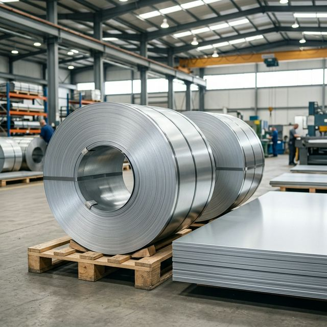

A Guide to GPSP (Galvanized Plain Skin Passed) Steel

Standard Galvanized Plain (GP) steel is excellent for general corrosion resistance, but it often has a distinct visual characteristic known as 'spangle'—the visible, crystalline patterns of zinc on the surface. While acceptable for roofing, these spangles will bleed through paint, making standard GP unsuitable for high-end aesthetic applications like refrigerator doors or car panels.
This is where GPSP (Galvanized Plain Skin Passed) steel proves invaluable.
What is Skin Passing?
Skin passing, also known as temper rolling, is an extra manufacturing step applied after the hot-dip galvanizing process. The galvanized steel is passed through precision cold-rolling mills under light pressure. This process slightly compresses the steel surface, achieving two critical outcomes:
- It completely flattens and smooths the zinc coating, creating an ultra-matte, zero-spangle finish.
- It eliminates the 'yield point elongation' of the steel, temporarily preventing stretcher-strains (ugly stretch marks) when the metal is later stamped or drawn into complex shapes.
Why Choose GPSP?
- Flawless Paintability: The matte texture provides the perfect microscopic roughness for premium paint and powder coating to adhere instantly, without any underlying pattern showing through.
- Superior Formability: The material behaves predictably during deep drawing operations, ensuring smooth curves without defects.
- Premium Aesthetics: Essential for consumer-facing metal products requiring a pristine look.
Ideal Industries for GPSP
Due to its specialized surface, GPSP is the base material of choice for:
- White Goods & Appliances: Refrigerators, washing machines, microwaves, and air conditioning units.
- Automotive Manufacturing: Exposed and unexposed auto body panels.
- Premium Architecture: High-end painted structural panels and aesthetic steel doors.